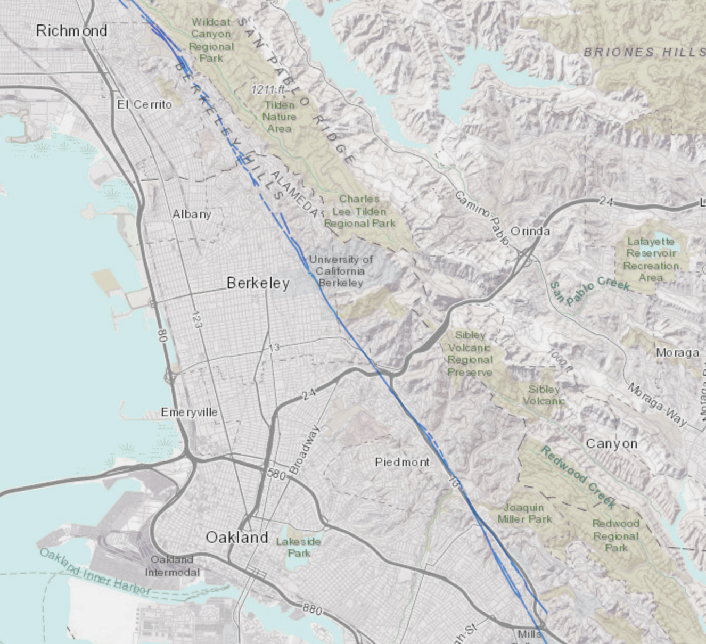
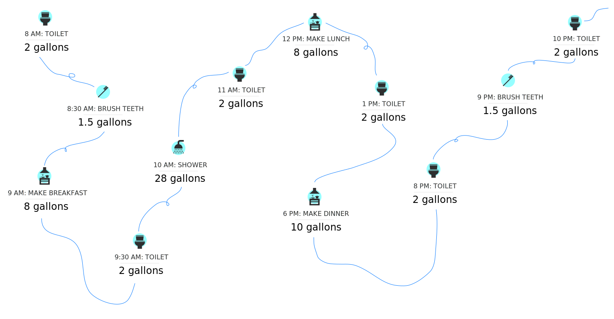
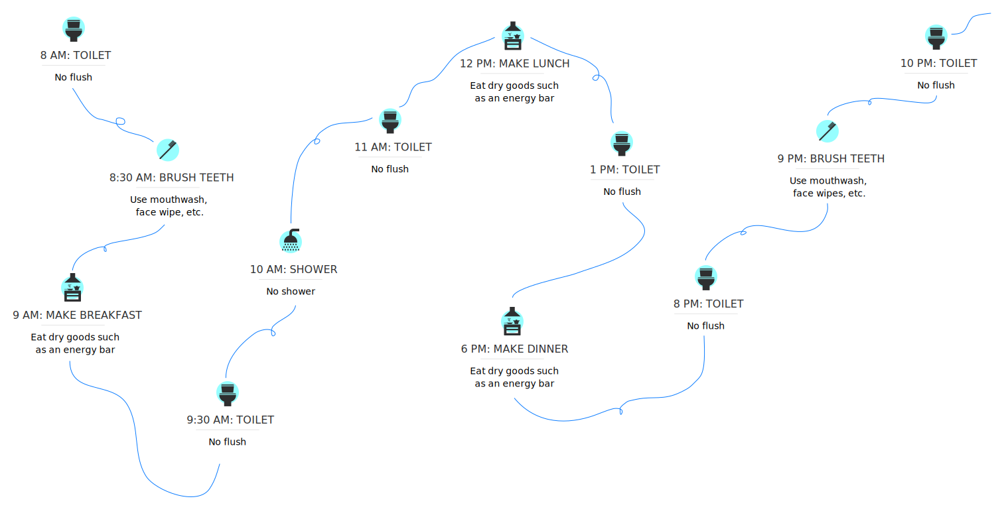

Following a disaster, such as an earthquake or wildfire, your utility may be unable to deliver water through your tap. Alternatively, tap water may be contaminated. It could take a week to restore systems to normal, which means you should keep a back-up supply of water at home.

The Hayward fault line, shown in the image to the left, extends from San Jose
about 74 miles northward along the base of the East Bay Hills to
San Pablo Bay. Communities on or near the fault include San Jose,
Oakland, Fremont, Richmond, Berkeley, Hayward, San Leandro, San Lorenzo,
El Cerrito, Emeryville, Kensington and Milpitas. Given that the last major earthquake
was more than 150 years ago in 1868, scientists are convinced that
the Hayward Fault has reached the point where a powerful,
damaging earthquake can be expected at any time. USGS earthquake
science tells us that it’s now urgent to prepare for the next magnitude
7 quake on the Hayward Fault.
Source: U.S. Geological Survey (USGS)
Multiple fault lines run through EBMUD's service areas; to find out
how close you live to a fault line, visit the link below.
Learn more
How long do you plan to live in the Bay Area? Round up to the nearest answer.
Source: Percentages calculated based on the Haywired Report
The East Bay Municipal Utilities District (EBMUD) provides high-quality drinking water for 1.4 million customers in the Alameda and Contra Costa counties. EBMUD has 4,100 miles of pipeline and 5 treatment plants. Although EBMUD completed an extensive Seismic Improvement program (SIP), there are still many vulnerabilities to earthquakes in the system. They have predicted almost 4,000 pipe breaks in the event of a 6.7 magnitude earthquake.
EBMUD’s system is particularly vulnerable (compared to other Bay Area water utilities) because:
We engage in several activities each day that need water, from bathing to cooking. In the event of an emergency, businesses and schools may be closed, requiring you to stay at home. The map below walks through a typical day with water for one person to show how many common activities require water.
According to the U.S. Geological Survey, the average person uses 80 gallons or more of water per day for indoor activities such as cooking, flushing the toilet, taking a shower or bath, washing hands, etc.
This estimate varies based on number of people in
household, type of faucets and plumbing systems, and other factors.
Please note that the water usage breakdown shown below is missing some
common activities such as cleaning, laundry, watering plants, etc.
Source: U.S. Geological Survey (USGS)
This map shows what a day without water might look like if you do not store water beforehand. Without stored water, you will likely need to make adjustments to your daily activities, be unable to complete certain activities (e.g., shower or rinse), and/or may spend more money on emergency water due to potential price inflation.
